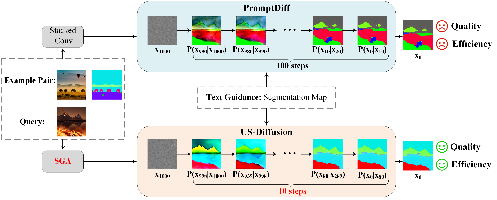
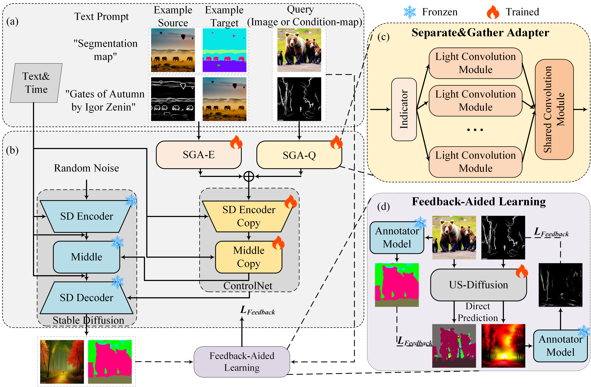

Underlying Semantic Diffusion for Effective and Efficient In-Context Learning
Zhong Ji1, Weilong Cao1, Yan Zhang1, Yanwei Pang1, Jungong Han, Xuelong Li
1Tianjin University, Tianjin, China
Abstract
Diffusion models has emerged as a powerful framework for tasks like image controllable generation and dense prediction. However, existing models often struggle to capture underlying semantics (e.g., edges, textures, shapes) and effectively utilize in-context learning, limiting their contextual understanding and image generation quality. Additionally, high computational costs and slow inference speeds hinder their real-time applicability. To address these challenges, we propose Underlying Semantic Diffusion (US-Diffusion), an enhanced diffusion model that boosts underlying semantics learning, computational efficiency, and in-context learning capabilities on multi-task scenarios. We introduce Separate \& Gather Adapter (SGA), which decouples input conditions for different tasks while sharing the architecture, enabling better in-context learning and generalization across diverse visual domains. We also present a Feedback-Aided Learning (FAL) framework, which leverages feedback signals to guide the model in capturing semantic details and dynamically adapting to task-specific contextual cues. Furthermore, we propose a plug-and-play Efficient Sampling Strategy (ESS) for dense sampling at time steps with high-noise levels, which aims at optimizing training and inference efficiency while maintaining strong in-context learning performance. Experimental results demonstrate that US-Diffusion outperforms the state-of-the-art method, achieving an average reduction of 7.47 in FID on Map2Image tasks and an average reduction of 0.026 in RMSE on Image2Map tasks, while achieving approximately 9.45× faster inference speed. Our method also demonstrates superior training efficiency and in-context learning capabilities, excelling in new datasets and tasks, highlighting its robustness and adaptability across diverse visual domains.

Framework
The proposed framework, US-Diffusion, aims to overcome the limitations of current diffusion models in terms of generation quality and computational efficiency. As illustrated in this figure, the framework comprises four main components: the widely-used Stable Diffusion (SD) model, the ControlNet module equipped with our Separate & Gather Adapter (SGA), the proposed Feedback-Aided Learning (FAL) framework, and the conditional input component. Together, these components enhance the model's ability to better capture underlying semantic information and improve generation quality. To tackle the issue of slow inference speed that is typical in diffusion models, we also propose an innovative Efficient Sampling Strategy (ESS) employed during the noise-adding and denoising stages.

BibTeX
@article{ji2025underlying,
title={Underlying Semantic Diffusion for Effective and Efficient In-Context Learning},
author={Ji, Zhong and Cao, Weilong and Zhang, Yan and Pang, Yanwei and Han, Jungong and Li, Xuelong},
journal={arXiv preprint arXiv:2503.04050},
year={2025}
}